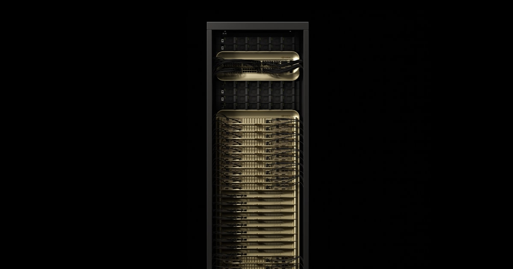

<!doctype html><html lang="zh-CN"><meta charset="utf-8"><style>*{box-sizing:border-box}body{margin:0;background:#fff;font-family:-apple-system,BlinkMacSystemFont,"PingFang SC","Microsoft YaHei",sans-serif;color:#243e30}main{width:366px;padding:14px 12px 12px;background:#f5f8f5;border-top:3px solid #17633f}h1{font-size:19px;line-height:1.4;margin:0 0 12px;color:#17633f}p{font-size:14px;line-height:1.55;margin:5px 0}h2{font-size:16px;line-height:1.4;margin:0 0 5px;color:#17633f}.row{padding:10px 0;border-top:1px solid #c7ddcf}.row:first-of-type{border:0}.note{font-size:12px;color:#6c7d70;line-height:1.5;margin-top:10px}.label{font-size:12px;letter-spacing:1px;color:#507b60;margin-bottom:5px}table{width:100%;border-collapse:collapse;table-layout:fixed;font-size:14px;line-height:1.5}th{text-align:left;font-weight:600;color:#17633f;background:#e6efe8}td,th{padding:8px 6px;vertical-align:top;border-bottom:1px solid #c7ddcf;overflow-wrap:anywhere}td:first-child{font-weight:500}tr:last-child td{border-bottom:0}td small{font-size:12px;color:#5d7567;display:block;line-height:1.5;margin-top:4px}img{width:100%;height:auto;display:block}strong{color:#17633f}a{color:inherit;text-decoration:none}.two{display:grid;grid-template-columns:1fr 1fr;gap:8px}.box{padding:10px;background:white;border:1px solid #d6e4da}.arrow{text-align:center;font-size:18px;margin:4px 0;color:#507b60}.footer{font-size:10px;letter-spacing:1px;color:#789281;margin-top:12px}</style><main><h1>GB200 NVL72</h1><p style="margin-top:10px">液冷机柜系统；与单张显卡属于不同交付层级。</p><p class="note">原图：NVIDIA 官方产品页；图片按原比例展示，不代表产品之间的实际尺寸。</p><div class="footer">旁观机器 / MACHINE OBSERVER</div></main></html>